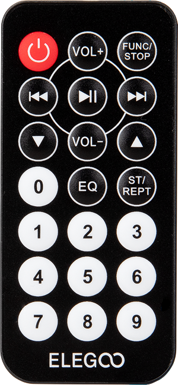

Repte Final Integrador: La Centraleta d'Emergències de l'Hospital de Cocaipata
Unim tot el que hem après al bloc (LEDs Pin 7/9/4, brunzidor Pin 6, polsador Pin 10, sensor de llum LDR Pin 2, condicionals IF/ELSE, bucles WHILE i comandament IR al Pin 15) per programar de forma autònoma el sistema complet d'alertes mèdiques entre Laimiña, Chilijchi, Pizorga i l'Hospital de Cocaipata.
1. Especificacions d'Enginyeria del Sistema Final
A l'Hospital de Cocaipata (representat per la vostra placa micro:STEAMakers + Imagina 3dBot V4), el metge de guàrdia vigila les peticions d'auxili que arriben a través de l'antena direccional receptora (Pin 15) des de les tres comunitats rurals (simulades pels botons del comandament d'infrarojos físic).

🔍 Pas Previ Obligatori: Mapeja les Tecles del Comandament!
A la taula següent no et donem quin número envia cada botó: abans de programar la centraleta, el teu equip ha de fer servir digues (codi IR) al Pin 15 per descobrir i anotar quin valor exacte envia cadascuna de les tecles d'aquest comandament (1, 2, 3, 0, 6, 7...).
Integra el sensor de llum LDR (Pin 2) al funcionament base de la centraleta: si és de dia (
≥ 350), totes les alertes sonen normalment al Pin 6. Si és de nit (< 350), les consultes (Tecla 1) i urgències (Tecla 2) passen a mode silenciós (només llum) per no despertar els pacients, i només l'emergència vital (Tecla 3) fa sonar el brunzidor!
| Comunitat / Funció | Tecla del Comandament (a mapejar) | Resposta d'Alerta (amb Mode Dia / Nit al LDR Pin 2) | Confirmació del Metge (Polsador Pin 10) |
|---|---|---|---|
| 🏘️ Laimiña Consulta rutinària |
Tecla «1» | Parpelleja LED Verd (Pin 7) + To suau 784 Hz al Pin 6 (de nit < 350: només llum, sense so!). |
En prémer Pin 10 (o en finalitzar l'avís), queda el LED Verd (Pin 7) fix de vigília. |
| 🏘️ Chilijchi Urgència moderada |
Tecla «2» | Bucle MENTRE: parpelleja LED Groc (Pin 9) + To 880 Hz al Pin 6 (de nit < 350: només llum, sense so!). |
En prémer Pin 10, s'atura l'avís i torna el LED Verd (Pin 7) fix. |
| 🏘️ Pizorga Emergència vital |
Tecla «3» | Bucle MENTRE: parpelleja ràpid LED Vermell (Pin 4) + Sirena aguda 1046 Hz al Pin 6 (sona tant de dia com de nit!). |
En prémer Pin 10, s'atura la sirena, melodia de confirmació i LED Verd (Pin 7) fix. |
| 📶 Test d'Antena / Reset | Tecla «0» | Comprovació d'alineació d'antenes (LoS) i reinici d'indicadors: flaix del LED Verd (Pin 7) (i 1 bip curt al Pin 6 si és de dia). | |
🏥 Centraleta de Reacció d'Emergències — Hospital de Cocaipata
Fes clic en una tecla per simular l'enviament infraroig de cada comunitat cap a Cocaipata:
Pin 15). Prem qualsevol botó d'emergència de l'esquerra!
🧩 Construeix el Diagrama de Flux Mestre de l'Hospital de Cocaipata
Ordena els 5 passos fonamentals del cicle d'atenció d'emergències amb els seus pins reals (15, 2, 4, 9, 7, 6 i 10):
2. Implementació Autònoma i Guia Pautada per al Vídeo Explicatiu
Ara és el vostre torn! Amb tot el que heu après a les sessions anteriors (blocs de Pins, Bucles, Condicionals IF / ELSE / WHILE, Variables, llibreria Tone i llibreria Infraroigs), heu de programar vosaltres sols la centraleta completa de l'Hospital de Cocaipata a MicroBlocks sobre la vostra placa micro:STEAMakers + Imagina 3dBot V4.
Un cop el sistema funcioni al taller, haureu de gravar un vídeo explicatiu on es vegi i s'escolti clarament tot el que demana aquesta pauta obligatòria:
💻 Part 1: Explicar el Codi Pas a Pas (Pantalla)
- Arrencada i mapeig IR: Explica quines llibreries has carregat (Infraroigs al Pin 15 i Tone al Pin 6), l'estat inicial (LED Verd
Pin 7) i quins números reals vas obtenir en mapejar les tecles del comandament! - Mode Nocturn Silenciós (
LDR Pin 2): Mostra com llegeixeslectura analògica 2(llindar350) perquè de nit (< 350) les tecles1i2només encenguin llum sense so, mentre que la3sempre faci sonar la sirena. - Presa de decisions i bloqueig (
si / repeteix mentre): Explica cada condicional de triatge (Pins 7, 9, 4 i 6), les pausesesperai com surt del bucle d'alarma en prémer el Polsador (Pin 10).
🔌 Part 2: Demostració Real al Microcontrolador (Placa)
- Proves de Dia (amb llum a l'LDR): Prem les tecles
1,2,3i0del comandament i mostra com responen els LEDs (7, 9, 4), el brunzidor (Pin 6) i la confirmació al Polsador (Pin 10). - Proves de Nit (tapant l'LDR
Pin 2): Tapa el sensor de llum amb el dit i demostra en directe que les tecles1i2passen a mode silenciós (només LEDs), però la tecla3continua fent sonar la sirena! - Arrencada automàtica (
en començar): Desconnecta la placa de MicroBlocks (o desendolla i torna a endollar el cable USB) per demostrar que el programa arrenca i funciona tot sol sense haver de clicar Play!
🚀 Part 3 (Obligatòria si heu fet Activitats d'Ampliació / Extras): Explicar-les Totes Una a Una!
Si el vostre equip ha implementat alguna o diverses de les activitats d'ampliació de l'apartat següent, les heu d'explicar i demostrar totes una per una al vídeo seguint aquest ordre per a cadascuna:
- 1r — Digues el nom de l'ampliació que ens mostraràs (p. ex. «Ara us mostrem l'Ampliació 3: Codi Secret 6-7 de Protocol de Defunció»).
- 2n — Ensenya els blocs nous a MicroBlocks (noves variables, comptadors, temporitzadors o màquina d'estats) i explica la lògica que has afegit.
- 3r — Fes la prova en directe a la placa provocant el cas real (superant les 3 emergències de saturació, deixant passar el timeout de 10 s o introduint tant una seqüència errònia com el codi exacte
6 ➔ 7).
3. Activitats d'Ampliació Avançada: Complica el Funcionament i la Lògica
Ja heu aconseguit que la centraleta bàsica funcioni? Ara toca convertir-la en un sistema hospitalari professional! Trieu aquests reptes (o combineu-los tots alhora!) per posar a prova la vostra lògica amb variables, temporitzadors, sensors múltiples i màquines d'estats a MicroBlocks:
1️⃣ Comptador i Bloqueig per Saturació
Crea una variable avisosAtesos que sumi +1 cada cop que el metge confirmi una emergència al Pin 10. Quan arribi a 3 emergències, la centraleta entra en Mode Saturació (encén els 3 LEDs 7, 9 i 4 alhora) i no accepta nous avisos fins que s'enviï la Tecla «0» mapejada de reset.
2️⃣ Temporitzador d'Escalada (Timeout 10 s)
Quan entri una urgència moderada (Tecla «2», LED Groc Pin 9), comença a comptar el temps amb una variable. Si passen 10 segons sense que ningú premi el polsador (Pin 10), el sistema assumeix que no hi ha metge a sala i escala automàticament l'alerta a Emergència Vital (LED Vermell Pin 4 + sirena, fins i tot de nit)!
3️⃣ Codi Secret «6 ➔ 7» (SIX-SEVEN): Avís de Defunció (Màquina d'Estats IR)
Per evitar enviar per error una notificació tan greu com la defunció d'una persona a la comunitat, fes que aquest protocol només s'activi si es premen seguides la Tecla «6» i immediatament després la Tecla «7» del comandament (amb els seus codis mapejats)! Si després del 6 es prem qualsevol altra tecla, la variable d'estat ha de tornar a zero. En completar 6 ➔ 7, activa un protocol solemne (els 3 LEDs 7, 9 i 4 fixos + un únic to greu llarg al Pin 6 fins confirmar al Pin 10).
4. Checklist de Validació Pràctica al Taller
Abans de lliurar el vídeo i donar per finalitzat el Bloc 4 amb el professorat, verifiqueu amb el vostre equip que heu completat aquests 6 punts: